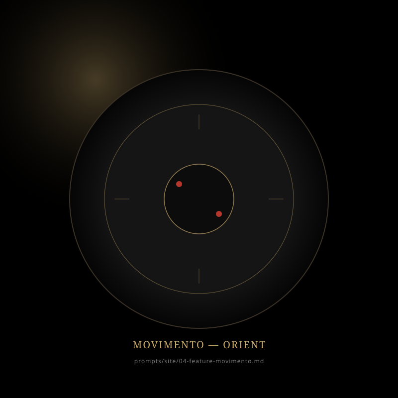
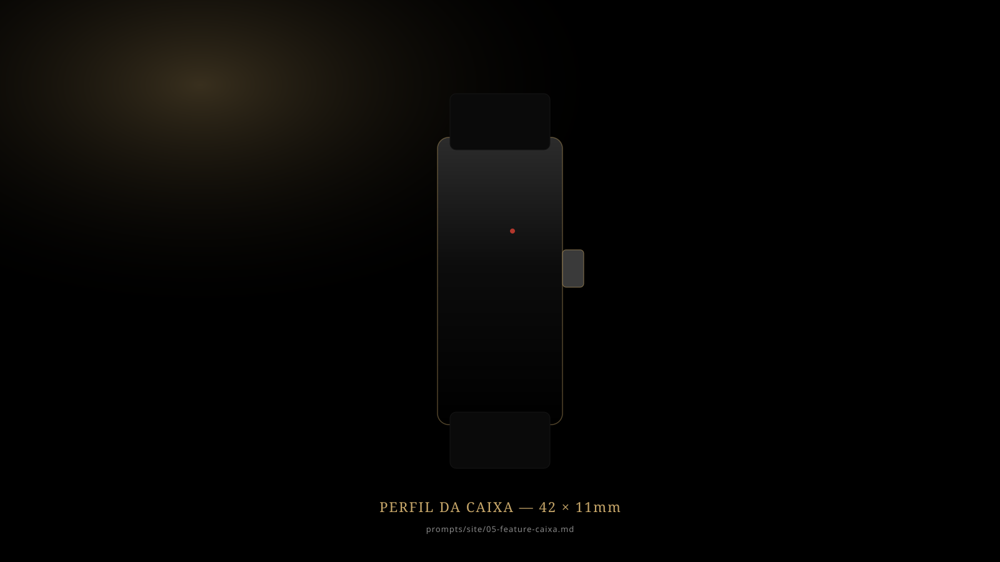
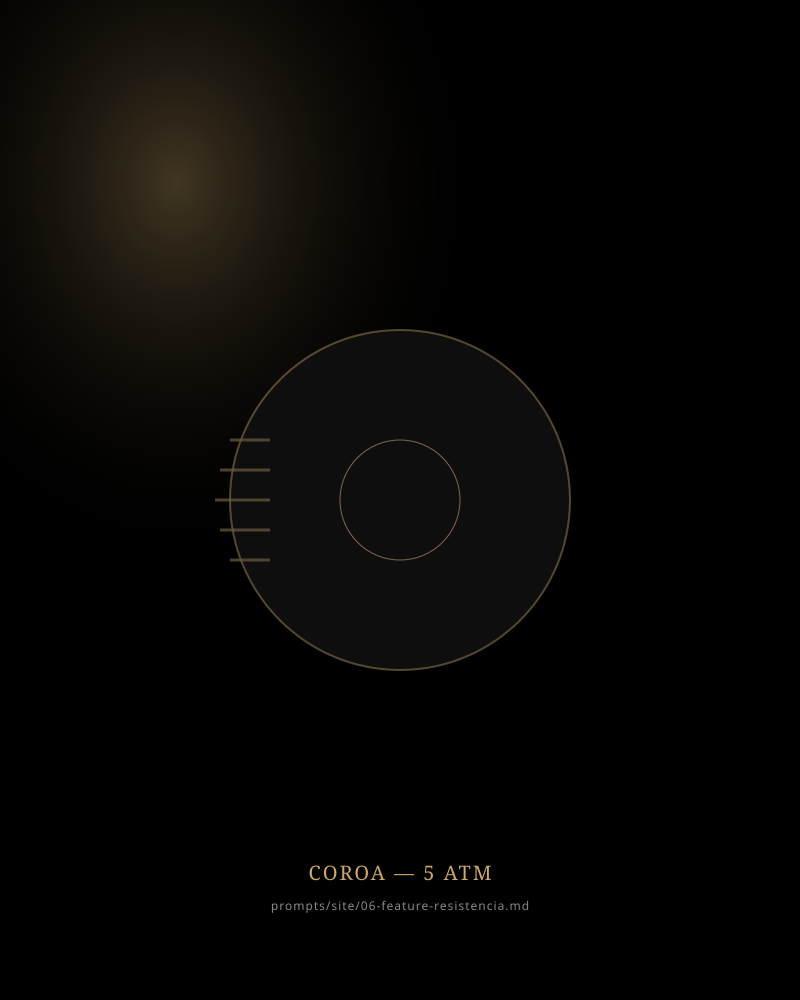
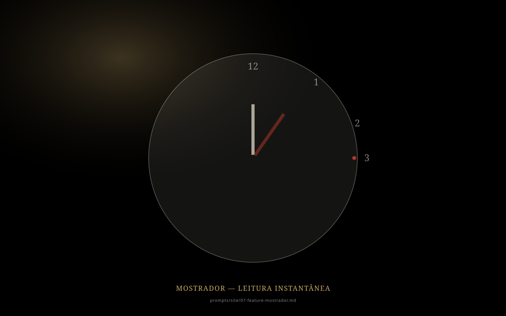

Vídeo cinemático: o relógio se montando peça a peça, controlado pelo scroll.
prompts/videos/Vídeo do relógio - hero.md
Engenharia japonesa.
No seu pulso.
Movimento de quartzo de precisão. Caixa em aço inoxidável. Resistência à água certificada. O primeiro relógio que você compra para usar pelos próximos dez anos.
Feito para durar mais que tendências.
Outros relógios param em seis meses. Este é diferente.
É o tipo de objeto que você usa hoje e ainda estará no seu pulso na próxima década.
Engenharia japonesa. Precisão calibrada em fábrica.
Por dentro, um movimento japonês desenvolvido pela Orient — a mesma engenharia que equipa relógios vendidos por dez vezes o preço. Calibrado em fábrica. Testado individualmente. Sem ajustes manuais. Sem sincronização. Apenas o tempo, exato.

Aço inoxidável escovado. 42mm. Sem concessões.
A caixa é usinada em aço inoxidável e finalizada com escovação satinada — o mesmo processo aplicado em relógios de mergulho profissional. Resistente a arranhões do dia a dia. Hipoalergênico. Projetado em 42mm: a proporção exata entre presença e elegância.

Water Resist 50m. Use na chuva. No mar. Na piscina.
Certificação 5 ATM. Lave as mãos, tome banho, nade na piscina ou enfrente uma tempestade sem pensar duas vezes. A vedação é testada à pressão equivalente a 50 metros de profundidade. Você nunca mais precisa tirar o relógio.

Você lê a hora em meio segundo. De propósito.
O mostrador foi projetado para uma única função: comunicar tempo com clareza absoluta. Numerais arábicos em alto contraste. Ponteiros com índice vermelho de orientação. Marcadores às 3, 6 e 9 destacados em vermelho para leitura rápida em qualquer ângulo. É o oposto do excesso. É funcionalismo japonês.

Sua pulseira. Sua escolha.
O mesmo relógio. Cinco personalidades. Troque rápido — clique e veja como fica.
Silicone Preto
Esportiva, hipoalergênica, perfurada para ventilação. A pulseira que vem de fábrica.
Cada detalhe, projetado.
Tudo o que você precisa saber, em uma única tabela.
- Movimento
- Quartzo Orient japonês
- Precisão
- ±20 segundos / mês
- Caixa
- Aço inoxidável 316L escovado
- Diâmetro
- 42 mm
- Espessura
- 11 mm
- Cristal
- Mineral endurecido
- Resistência
- 5 ATM (50 m)
- Pulseira
- Silicone hipoalergênico perfurado
- Bateria
- 3 anos de autonomia
- Calendário
- Data automática
- Garantia
- 1 ano internacional Orient
A marca preferida de quem entende de relógio.
“Comprei como meu primeiro relógio há 4 anos. Uso todo dia, no trabalho e na praia. Nunca atrasou um minuto.”
Rafael M. · Engenheiro
“Achei que ia ser só mais um relógio bonito. Está no meu pulso há 3 anos sem nenhum problema.”
Lucas P. · Advogado
Tudo o que você quer saber.
Por que escolher Orient e não uma marca mais conhecida?
Orient é uma das maiores fabricantes japonesas de relógios — pertence ao mesmo grupo da Seiko. A diferença é que Orient não investe em marketing global, então você paga pela engenharia, não pela publicidade.
O movimento é fabricado no Japão?
Sim. O movimento de quartzo é desenvolvido e calibrado nas fábricas da Orient no Japão.
Posso nadar com ele?
Sim. Com 5 ATM de resistência (50 metros), você pode usar no banho, na piscina e em natação recreativa. Para mergulho profissional, recomendamos modelos específicos.
A pulseira pode ser trocada?
Sim. A pulseira é padrão de 22mm e pode ser substituída por qualquer modelo compatível — couro, aço, nylon.
Qual a garantia?
1 ano de garantia internacional Orient cobrindo defeitos de fabricação. Suporte em rede autorizada no Brasil.
Como é a precisão comparada a um smartwatch?
Diferente. Um smartwatch depende de bateria diária e atualizações. Este relógio mantém precisão de ±20 segundos por mês com 3 anos de autonomia. Você nunca tira do pulso.
O relógio que você usa hoje.
E daqui a dez anos.
Engenharia japonesa. Construção em aço. Resistência certificada. Pelo preço de um jantar bom.
Vídeo: a caixa Orient abrindo lentamente para revelar o relógio.
prompts/videos/Vídeo do relógio na caixa/